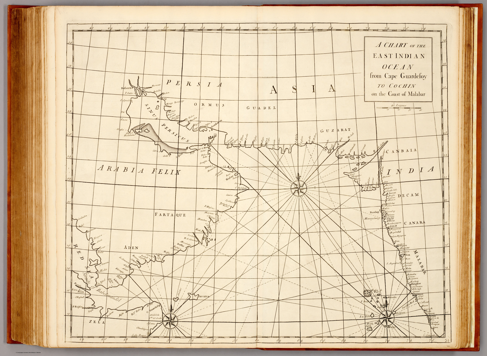

Click to enlargeA nautical chart of the western approaches to India — from Cape Guardafui on the Horn of Africa across the Arabian Sea to Cochin on the Malabar coast — from the 1728 Atlas Maritimus & Commercialis, the first popular English atlas of trade and navigation. The sea-road to India drawn for the merchant captain.
Authorship and object
From the Atlas Maritimus & Commercialis (London, 1728), the consortium sea-atlas conventionally associated with Nathaniel Cutler and Edmond Halley but chiefly executed by the engraver John Senex. The chart covers the Arabian Sea between the Horn of Africa and the south-west Indian coast — rhumb lines, soundings, shoals and graticule — at about 1:6,000,000.
The Arabian Sea as fairway
Its frame is the navigator's: not India entire, but precisely the stretch of ocean and coast a ship crossed to reach the Malabar pepper ports. Cape Guardafui to Cochin is a sailing problem made visible — the monsoon-driven passage that had carried trade between Arabia and India since antiquity, here rendered as a modern commercial chart.
The gaze
Like its companion world chart, this sheet sees India from the sea and for the purposes of trade. The subcontinent enters only as its receiving coast; what matters is the water in between — the route, the hazards, the anchorages. It is the maritime gaze that underlies the whole European encounter: India approached, always, across an ocean.